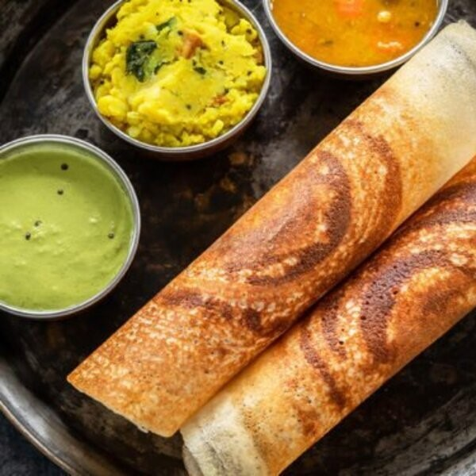

Masala Dosa

Ingredients
- 3 tbsp oil
- ½ tsp ginger paste
- 1 tsp green chilli paste
- ½ cup chopped onion
- Salt to taste
- 1 tsp red garlic chutney
- 1 tsp red chilli powder
- 1 tbsp pavbhaji masala
- ½ cup potato bhaji
- 2-3 tbsp water
- 2 tbsp coriander leaves
Method
- In a pan, add oil, ginger-green chili paste and onion. Sauté till onion is translucent.
- Then add tomatoes and salt. Cook till tomatoes become soft and mashy.
- Now lower the flame and add red garlic chutney, red chili powder, and pavbhaji masala. Add little water and cook for 2-3 minutes.
- Add potato bhaji and mix well. Mash everything with masher and cook till oil separates from bhaji.
- Garnish with coriander leaves. Spicy and tasty mysore bhaji is ready.
- In a dosa batter, add salt, sugar, and water. Mix well.
- Now heat, tawa and grease it with oil. Spread dosa batter with ladle.
- Spread red chutney and batter evenly on dosa
- Cook till dosa become crispy. Serve dosa with mysore bhaji and sambhar.